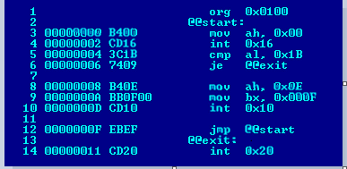
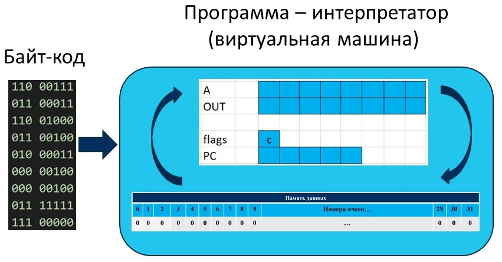
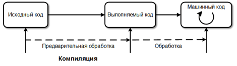
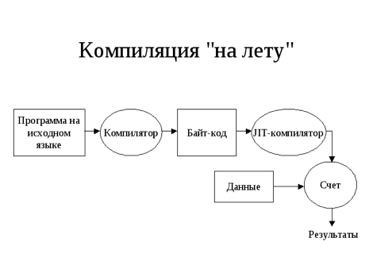
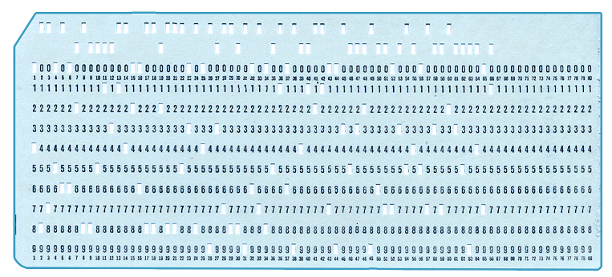
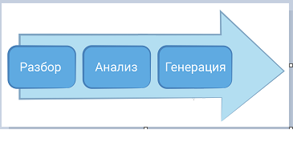
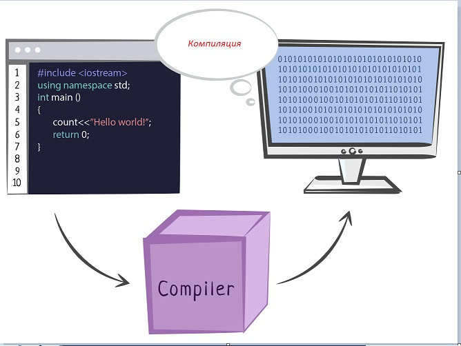

| Тема 2 Создание программы в машинном или байт-коде. | ||
| Назад | ||
|
Классификация языков программирования по модели исполнения программы. Интерпретируемые языки исполняются непосредственно, без этапа компиляции. Программа, называемая интерпретатором, читает каждое выражение, определяет сообразное действие, и совершает его. Гибридный вариант может генерировать машинный код “на лету” и исполнять его.
Компиляция может производиться непосредственно в машинный код, или в какое-либо промежуточное представление (байт-код), которое потом интерпретируется виртуальной машиной.
Транс-компилируемые языки – это языки, которые для компиляции или выполнения транслируются в другой язык. Частой целью для транс-компилируемых языков является C. Также последнее время популярной целью является JavaScript (как единственный язык, исполняемый в браузере).
Машинный код. Машинный код (платформенно-ориентированный
код), машинный язык — система команд (набор
кодов операций) конкретной
вычислительной машины, которая интерпретируется
непосредственно процессором
или микропрограммами этой
вычислительной машины. Каждая модель процессора
имеет собственный набор команд, хотя во многих моделях эти
наборы команд сильно перекрываются.

Байт-код. Байт-код (байткод; англ.
bytecode, также иногда p-код, p-code от portable code) —
стандартное промежуточное представление, в которое может быть
переведена компьютерная программа автоматическими средствами. По
сравнению с исходным кодом, удобным для создания и чтения
человеком, байт-код — это компактное представление программы,
уже прошедшей синтаксический и
семантический анализ. В нём в явном виде
закодированы типы, области видимости и другие конструкции.
С технической
точки зрения байт-код представляет собой
машинно-независимый код
низкого уровня, генерируемый транслятором из исходного кода.
 Компилируемые языки. Приложения, написанные на одном из
высокоуровневых языков для компьютеров или мобильных устройств,
представляют собой набор данных и инструкций. Они состоят из
синтаксических единиц. В компилируемых языках программирования
исходный текст код преобразуется в набор машинных инструкций с
помощью специальной программы. Для него создается отдельный файл
со своим заголовком либо определенным расширением, он
считывается и исполняется операционной системой.
 Рис. 1. Алгоритм работы программы-компиляции исходного кода в машинный Компилируемые языки имеют одну особенность: в случае внесения каких-либо изменений в исходный код описанный процесс повторяется. Программа снова компилируется в набор машинных инструкций, происходит ее запись в исполняемый файл. Результаты исправлений оценивается только после завершения процесса.
Языки программирования компилирующие в байт-код.
 Компилируемые языки (байт-код): Python, Java, C#
Создание программы в машинном или байт-коде. Процессор — это, по сути, очень сложный и
продвинутый калькулятор. У него есть множество ячеек памяти
(называемых регистрами) с которыми и между которыми проводятся
различные математические и байтовые операции.
Машинный код как
раз и представляет собой описание последовательности выполнения
операций и набора участвующих данных. По сути, это единственный
язык, который понимает процессор вашего компьютера. Впрочем, заново компилировать приходится не только из-за процессоров, но и еще из-за различий во взаимодействии программ и операционной системы. Именно из-за них невозможно запустить «виндовую» программу под Linux, а «линуксовую» под Windows. Программы не пишутся в машинном коде – в форме, доступной для непосредственного выполнения компьютером, они создаются на языке высокого уровня – языке программирования, ориентированном на человека. Язык программирования также можно рассматривать как машинный код некоторого абстрактного компьютера, отличающегося от реальных процессоров. Мы будем говорить в таких случаях об абстрактных или виртуальных машинах. Преобразование программы в машинные коды. Процессор — самая важная часть компьютера. Он обрабатывает информацию, выполняет команды пользователя и следит за работой всех подключенных устройств. Но процессор может разобрать только машинный код — набор 0 и 1, которые записаны в определённом порядке. Программы для первых компьютеров выглядели как огромные наборы 0 и 1. Чтобы записать такую программу, инженеры пользовались гибкими картонными карточками — перфокартами. Цифры на перфокарте записывались поочередно, в несколько строк. Чтобы записать 1, программист делал отверстие в карте. Места без отверстия обозначали 0.
 Компьютер считывал перфокарту специальным
устройством и выполнял записанную команду. Для одной программы
составляли сотни перфокарт. Процесс компиляции программы.
 Основным модулем системы программирования всегда является компилятор. Характеристики компилятора, прежде всего, влияют на эффективность результирующих программ, порождаемых системой программирования. Основные термины и понятия. Транслятор (переводчик)– это программа, которая переводит входную программу на исходном (входном) языке в эквивалентную ей выходную программу на результирующем (выходном) языке. Результирующая программа транслятора в общем
случае может быть написана на любом языке (например, транслятор
с языка Pascal на язык С#).
Преобразование программного кода в машинный называется компиляцией. Компиляция только преобразует код. Она не запускает его на исполнение. В этот момент он “статически” (то есть без запуска) транслируется в машинный код. Это сложный процесс, в котором сначала текст программы разбирается на части и анализируется, а затем генерируется код, понятный процессору.
 Преобразование программы в байт код. При преобразовании языка программирования из исходного кода в машинный код некоторые языки программирования преобразуют исходный код в промежуточный код, известный как байт-код. C#, Java - один из основных языков программирования, использующий байт-код. Процесс преобразования исходного кода в байт-код выглядит следующим образом.
|
||
| Конспект подготовлен Бакулиным А. М. 2022 год. | ||